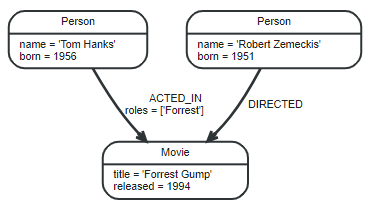
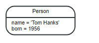
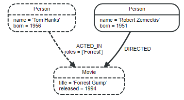

-
Neo4j
- Graph Database
- CQL
- Data Import
- Query management
- UIs
- Neo4j Sandbox
- Neo4j Cluster
Neo4j
Neo4j is an open source, NoSQL, native graph databases. In Neo4j, the data are persisted for long term durability. Neo4j can be used with both the open-source license (Community Edition) or a commercial license (Enterprise Edition) which includes technical support.
Graph Database
Graph database is a database used to model the data in the form of graph. The model represents data in Nodes, Relationships and Properties. Unlike relational database, graph databases store relationships and connections as first-class entities.
Concepts

Node
Nodes are often used to represent entities

Label
Labels are used to shape the domain by grouping nodes into sets. With that in place, you can ask to perform operations only on your given label nodes. Since labels can be added and removed during runtime, they can also be used to mark temporary states for nodes. A node can have zero to many labels. Labels are used associate indexes and constraints with groups of nodes.
Relationships
A structure with a name and direction that describes the relationship between two nodes and provides structure and context to the graph. A relationship connects two nodes or one nodes(self-reference), it must have exactly one relationship type. Relationships always havs a directions, for each Relationship contains From Node and To Node.

Properties
Nodes and relationships define the graph while properties add context by storing relevant information in key-value pairs in the nodes and relationships that are used to add qualities to nodes and relationships.
Property values can be
- Number, an abstract type, which has the subtypes Integer and Float
- String
- Boolean
- The spatial type Point
- Temporal types: Date, Time, LocalTime, DateTime, LocalDateTime and Duration
Traversals and paths
Traversing a graph means visiting nodes by following relationships according to some rules. The traversal result could be returned as a path.

Schema
A schema in Neo4j refers to indexes and constraints.
Indexes
Indexes are used to increase performance.
Constraints
Constraints are used to make sure that the data adheres to the rules of the domain. This is optional, you can create data without defining a schema.
Comparison with SQL
| RDBMS | Graph Database |
| ————- -|:—————-:|
|
Tables | Graphs |
|
Rows | Nodes |
|
Columns | Properties |
|
Cells | Values |
|
Constraints|
Relationships|
| Joins |
Traversal |
Features
- Constant time traversals
- Scalability: Users can scale the database by increasing the number of reads/writes and volume without effecting the query speed and data integrity.
- Cypher Query Language (CQL): a declarative query language similar to SQL, but designed for graph pattern matching and traversals
- Flexible Schema: easily change according to the requirement, property graph schema that can adapt over time
- ACID Properties: Atomicity, Consistency, Isolation, and Durability
- Reliability: It also support for Replication for data safety and reliability.
- Built-in Neo4j browser web applications to create and retrieve graph data
- Driver Support: Java, Go, Python
Technical View
Object Cache
The object cache caches individual relationships and nodes and respectively their properties in a form which is optimized for traversal of the graph.
Protocol
The Neo4j Browser and the official Neo4j Drivers use the Bolt database protocol to communicate with Neo4j. From an application or from the Neo4j Browser, you can execute query statements.
| Connector name | Protocol | Default port number |
|---|---|---|
| dbms.connector.bolt | Bolt | 7687 |
| dbms.connector.http | HTTP | 7474 |
| dbms.connector.https | HTTPS | 7473 |
Bolt is an efficient binary protocol for access to the database layer that compresses data sent over the wire as well as encrypting the data.
Index-free adjacency
Index-free adjacency means that the query engine uses pointers to traverse paths (nodes connected by relationships) in the graph which is very fast.
CQL
Neo4j has CQL as query language, CQL stands for Cypher Query Language. You can practise your CQL skill in Neo4j Sandbox.
NULL
NULL is used to represent missing or undefined values.
Parameters
Cypher supports querying with parameters for.
- literals and expressions
- node and relationship ids
- for explicit indexes only: index values and queries
String literal
MATCH (n:LabelOfNode) WHERE n.property = $value RETURN n
Regular expression
MATCH (n:LabelOfNode) WHERE n.property ~= $regex RETURN n
Create node with properties
CREATE ($props)
Setting all properties on a node
MATCH (n:LabelOfNode) WHERE n.property=value SET n = $props
SKIP and LIMIT
MATCH (n:LabelOfNode) RETURN n.property SKIP $s LIMIT $l
Multiple node ids
MATCH (n) WHERE id(n) IN $ids RETURN n.property
Calling procedures
CALL db.resampleIndex($indexname)
MATCH
Returns all the nodes in database
MATCH (node) RETURN node
Get all the nodes under a specific label
MATCH (node:LabelOfNode) RETURN node
Match by Relationship
MATCH (node1)-[:Relationship_Of]->(node2) RETURN node1
MATCH (node1)-[:Relationship_Of]->(node2) RETURN node2
MATCH (node1)<-[:Relationship_Of]-(node2) RETURN node1
MATCH (node1)<-[:Relationship_Of]-(node2) RETURN node2
MATCH (node1)-[:Relationship_Of]-(node2) RETURN node1
MATCH (node1)-[:Relationship_Of]-(node2) RETURN node2
Variable length relationships
Returns all node2 related to node1 by 1 to 3 hops
MATCH (node1:LabelOfNode1)-[:Relationship_Of*1..3]->(node2:LabelOfNode2) RETURN node2
Match a path
MATCH p =(a)-->(b)-->(c)
RETURN p
OPTIONAL MATCH
The OPTIONAL MATCH clause is used to search for the pattern described in it, while using nulls for missing parts of the pattern, it could be considered the equivalent of the outer join in SQL
MATCH (node1:LabelOfNode {properties...})
OPTIONAL MATCH (node1)-[:Relationship_Of]->(node2)
RETURN node2
MATCH (node1:LabelOfNode {properties...})
OPTIONAL MATCH (node1)-->(node2)
RETURN node2
WHERE
Filter by property
MATCH (node)
WHERE node.property = value
RETURN node
WHERE Clause with Multiple Conditions
MATCH (node)
WHERE node.property1 = value1 AND node.property2 = value2
RETURN node
Using Relationship with Where Clause
MATCH (node)
WHERE (node)-[:Relationship_Of]->({properties})
RETURN node
String matching
MATCH (n) WHERE n.property STARTS WITH value RETURN n
MATCH (n) WHERE n.property ENDS WITH value RETURN n
MATCH (n) WHERE n.property CONTAINS value RETURN n
In
MATCH (n) WHERE n.property IN [value1, value2[,...]] RETURN n
CREATE
Creating Nodes
Create a simple node
The node name in CQL are actually variables. You can assign a node (or a relationship) to a variable to handle this node in the rest of the Cypher query.
CREATE (node);
Create multiple nodes
CREATE (node1),(node2);
Create node with a label
CREATE (node:LabelOfNode)
Create a node with multiple labels
CREATE (node[:LabelOfNode1[:LabelOfNode2[...]]])
Create multiple nodes with multiple labels
CREATE (node1[:LabelOfNode1[:LabelOfNode2[...]]]), (node2[:LabelOfNode1[:LabelOfNode2[...]]])[,...];
Create node with Properties
CREATE (node:LabelOfNode {key1:value[, key2:value,[...]]})
RETURN newly created node
CREATE (Node:LabelOfNode{properties}) RETURN Node
Creating Relationships
Creating a new relationship
CREATE (node1)
CREATE (node2)
CREATE (node1)-[:Relationship_Of]->(node2)
Creating a Relationship Between the Existing Nodes
MATCH (node1:LabeofNode1), (node2:LabeofNode2)
WHERE node1.property1 = value1 AND node2.property2 = value2
CREATE (node1)-[:Relationship_Of]->(node2)
Creating a Relationship with Label and Properties
CREATE (node1)-[variable:Rel_Type {key1:value1, key2:value2, . . . n}]->(node2)
Creating a Complete Path
CREATE p = (node1 {properties})-[:Relationship_Of1]->(node2 {properties})[:Relationship_Of2]->(node3 {properties})
RETURN p
RETURN
Returning Created Node
Create (node:LabelOfNode {properties})
RETURN node
Unique results
Create (node:LabelOfNode {properties})
RETURN DISTINCT node
Returning Multiple Nodes
CREATE (node1:LabelOfNode1 {properties}), (node2:LabelOfNode2 {properties})
RETURN node1, node2
Returning Relationships
CREATE (node1)-[r:Relationship_Of]->(node2) RETURN r
Returning Properties
MATCH (node:LabelOfNode {properties}) RETURN node.property
Returning All Elements
MATCH p = (node1)-[:Relationship_Of]-(node2) RETURN COUNT(*)
MATCH p = (node1)-[:Relationship_Of]->(node2) RETURN COUNT(*)
Returning a Variable With a Column Alias
MATCH (node:LabelOfNode {properties}) RETURN node.property AS alias
ORDER BY
Ordering By a Property
MATCH (n)
RETURN n.property1, n.property2[,...]
ORDER BY n.property1
Ordering Nodes by Multiple Properties
MATCH (n)
RETURN n
ORDER BY n.property1, n.property2
Ordering Nodes by Descending Order
MATCH (n)
RETURN n
ORDER BY n.property DESC
LIMIT
The LIMIT clause is used to limit the number rows returned from the query or passed to other parts of a query.
MATCH (n)
RETURN n
ORDER BY n.property
LIMIT 1
Limit with expression
MATCH (n)
RETURN n
ORDER BY n.property
LIMIT toInt(3 * rand()) + 1
SKIP
The SKIP clause is used to define from which row to start including the rows in the output.
Skipping the first 3 nodes
MATCH (n)
RETURN n.property1, n.property2
ORDER BY n.property1 DESC
SKIP 3
Skip Using Expression
MATCH (n)
RETURN n.property1, n.property2
ORDER BY n.property1 DESC
SKIP toInt(3 * rand()) + 1
WITH
WITH clause is used to perform some intermediate processing during a query where you may want to save some results or test some values during the query to control whether a query will end.
MATCH (n)
WITH n
ORDER BY n.property
RETURN collect(n.property)
UNWIND
The UNWIND clause is used to unwind a list into a sequence of rows.
UNWIND [a, b, c, d] AS x
RETURN x
MERGE
MERGE command is a combination of CREATE command and MATCH command. It ensures that a patterns exists in the graph, either the pattern already exists or it is created.
Merging a Node with a Label
MERGE (node:LabelOfNode) RETURN node
Merging a Node with Properties
MERGE (node:LabelOfNode {key1:value[, key2:value, key3:value[...]]})
OnCreate and OnMatch
Whenever, we execute a merge query, a node is either matched or created. Using on create and on match, you can set properties for indicating whether the node is created or matched.
MERGE (node:LabelOfNode {properties})
ON CREATE SET node.isCreated ="true"
ON MATCH SET node.isFound ="true"
Merge a Relationship
MATCH (node1:LabelOfNode1), (node2:LabelOfNode2)
WHERE node1.property1 = value1 AND node2.property2 = value2
MERGE (node1)-[:Relationship_Of]->(node2)
RETURN node1, node2
DELETE
Nodes cannot be deleted if they still have relationships attached to them.
Deleting All Nodes and Relationships
MATCH (node) DETACH DELETE node
Deleting a Particular Node
MATCH (node:LabelOfNode)
WHERE node.property = value
DETACH DELETE node
REMOVE
Removing a Property
MATCH (node:LabelOfNode)
WHERE node.property1 = value1 AND node.property2 = value2
REMOVE node.property3
RETURN node
Removing Label From a Node
MATCH (node:LabelOfNode)
WHERE node.property1 = value1 AND node.property2 = value2
REMOVE node:LabelOfNode1[:LabelOfNode2[:LabelOfNode3...]]
RETURN node
SET
Using Set clause, you can add new properties to an existing Node or Relationship, and also add or update existing Properties values
Setting a Property
MATCH (node:LabelOfNode)
WHERE node.property1 = value1 [AND node.property2 = value2[...]]
SET node.property = value
RETURN node
Setting Multiple Properties
MATCH (node:LabelOfNode)
WHERE node.property1 = value1 [AND node.property2 = value2[...]]
SET node.property3 = value3, node.property4 = value4
RETURN node
Setting a Label on a Node
MATCH (node:LabelOfNode)
WHERE node.property1 = value1 [AND node.property2 = value2[...]]
SET node:LabelOfNode
RETURN node
Setting Multiple Labels on a Node
MATCH (node:LabelOfNode)
WHERE node.property1 = value1 [AND node.property2 = value2[...]]
SET node:LabelOfNode1, LabelOfNode2
RETURN node
FOREACH
The FOREACH clause is used to update data within a list whether components of a path, or result of aggregation.
MATCH p = (node1)-[*]->(node2)
WHERE node1.property1 = value1 AND node2.property2 = value2
FOREACH (n IN nodes(p)| SET n.marked = TRUE)
Index
A database index is a redundant copy of some of the data in the database for the purpose of making searches of related data more efficient. This comes at the cost of additional storage space and slower writes.
Creating an Index
CREATE INDEX ON:LabelOfNode(property[,properties..])
Deleting an Index
DROP INDEX ON:LabelOfNode(property[,properties..])
Constraint
Constraint enforce data integrity, it can be applied to either nodes or relationships.
Unique node property constraints
Unique property constraints is a rule that ensures that property values are unique for all nodes with a specific label
CREATE CONSTRAINT ON (n:LabelOfNode) ASSERT n.property IS UNIQUE
DROP CONSTRAINT ON (n:LabelOfNode) ASSERT n.property IS UNIQUE
Node property existence constraints
CREATE CONSTRAINT ON (n:LabelOfNode) ASSERT exists(n.property)
DROP CONSTRAINT ON (n:LabelOfNode) ASSERT exists(n.property)
Relationship property existence constraints
CREATE CONSTRAINT ON ()-[r:Relationship_Of]-() ASSERT exists(r.property)
DROP CONSTRAINT ON ()-[r:Relationship_Of]-() ASSERT exists(r.property)
String Functions
UPPER
LOWER
SUBSTRING
Replace
Aggregation Function
COUNT
The COUNT function is used to count the number of rows.
MATCH (node) RETURN COUNT(*)
The following state doesn’t counts null values.
MATCH (node) RETURN COUNT(node)
Group Count
The COUNT clause is also used to count the groups of relationship types. We can count by one direction or by both direction.
Match(node1)-[r]-(node2)
RETURN type(r), count(*)
Match(node1)-[r]->(node2)
RETURN type(r), count(*)
MAX
MIN
SUM
AVG
List Functions
EXTRACT
Extract returns a list containing the values resulting from an expression which has been applied to each element in a list list
EXTRACT(variable IN list | expression)
FILTER
FILTER returns a list lresult containing all the elements from a list list that comply with the given predicate.
FILTER(variable IN list WHERE predicate)
KEYS
KEYS returns a list containing the string representations for all the property names of a node, relationship, or map.
KEYS(expression)
LABELS
LABELS returns a list containing the string representations for all the labels of a node.
LABELS(node)
NODES
NODES returns a list containing all the nodes in a path.
NODES(path)
RANGE
RANGE returns a list comprising all integer values within a range bounded by a start value start and end value end, where the difference step between any two consecutive values is constant
RANGE(start, end [, step])
REDUCE
REDUCE returns the value resulting from the application of an expression on each successive element in a list in conjunction with the result of the computation thus far.
REDUCE(accumulator = initial, variable IN list | expression)
RELATIONSHIPS
RELATIONSHIPS returns a list containing all the relationships in a path.
RELATIONSHIPS(path)
REVERSE
REVERSE returns a list in which the order of all elements in the original list have been reversed.
REVERSE(original)
TAIL
TAIL returns a list lresult containing all the elements, excluding the first one, from a list list.
TAIL(list)
Scalar functions
COALESCE
COALESCE returns the first non-null value in the given list of expressions.
COALESCE(expression [, expression]*)
STARTNODE
STARTNODE returns the start node of a relationship.
STARTNODE(relationship)
ENDNODE
ENDNODE returns the end node of a relationship.
ENDNODE(relationship)
HEAD
HEAD returns the first element in a list.
HEAD(list)
LAST
LAST returns the last element in a list.
LAST(expression)
SIZE
SIZE returns the number of elements in a list or set of results or string.
SIZE(list or pattern expression or string)
LENGTH
LENGTH returns the length of a path.
LENGTH(path)
ID
ID returns the id of a relationship or node.
MATCH (n) WHERE ID(n)=id RETURN n
TYPE
TYPE returns the string representation of the relationship type.
TYPE(relationship)
PROPERTIES
PROPERTIES returns a map containing all the properties of a node or relationship.
PROPERTIES(expression)
RANDOMUUID
TIMESTAMP
TOBOOLEAN
TOFLOAT
TOINTEGER
Procedures
Check which procedures are available
CALL dbms.procedures()
- db.indexes() List all indexes in the database.
- db.labels() List all labels in the database
- db.propertyKeys() List all property keys in the database.
- db.relationshipTypes() List all relationship types in the database.
- db.schema() Show the schema of the data.
- db.constraints() List all constraints in the database.
Data Import
We can use LOAD CSV to batch imports of large amouts of data from CSV files. We can use Neo4j ETL Tool or Neo4j Import tool.
LOAD CSV FROM "url" AS row FIELDTERMINATOR ";"
Query management
Profiling a query
Explain
If you want to see the execution plan but not run the statement.
PROFILE
If you want to run the statement and see which operators are doing most of the work, use PROFILE. This will run your statement and keep track of how many rows pass through each operator, and how much each operator needs to interact with the storage layer to retrieve the necessary data.
Kill Queries
When you have a query that is taking too long to execute on your system, You can execute
CALL dbms.listQueries()
Which return the list of queries currently running. And then
CALL dbms.killQuery('query-id')
UIs
Neo4j Desktop
In Neo4j Desktop, you can only start a single database.
Plugin
If you need additional functionality from a specialized library, you can add the library as a plugin for your project.
Neo4j Browser
You can only use Neo4j Browser to connected to a running Neo4j instance and you can only connect to a single database at a time.
Browser Sync
When you log in to Browser Sync from your Neo4j Browser, you can add folders and Cypher scripts in the cloud for use in a different Neo4j Browser session.
Neo4j Bloom
Neo4j Sandbox
It is a temporary Neo4j instance in the cloud where you can access a database for 3 to 10 days. By default it will also install APOC, Graph Algorithms and GraphQL.
Neo4j Cluster
Neo4j clusters allow your application to be highly available so that if a server goes down, another server will take over and also highly scalable so that application that read the data can be distributed in many places.